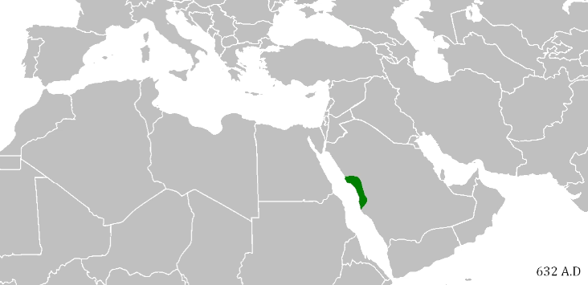
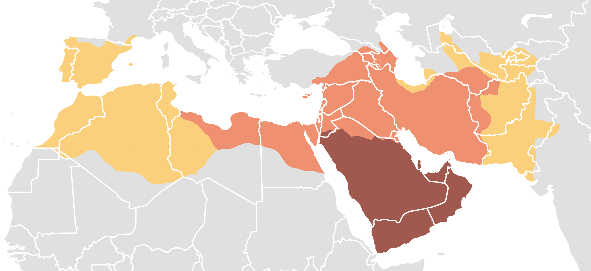
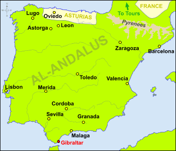
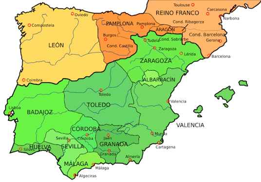
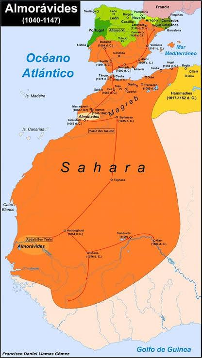
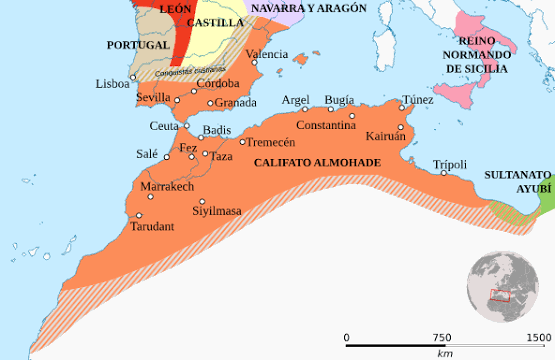
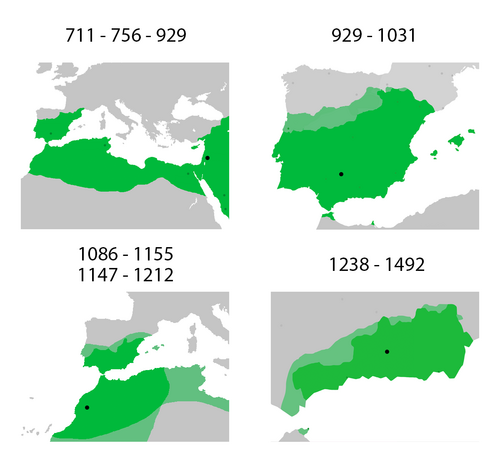
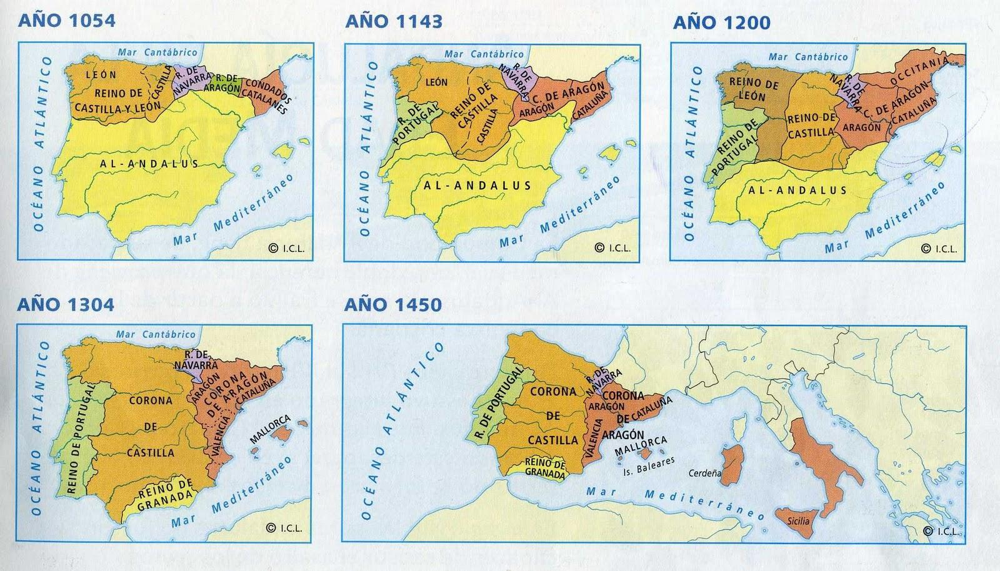
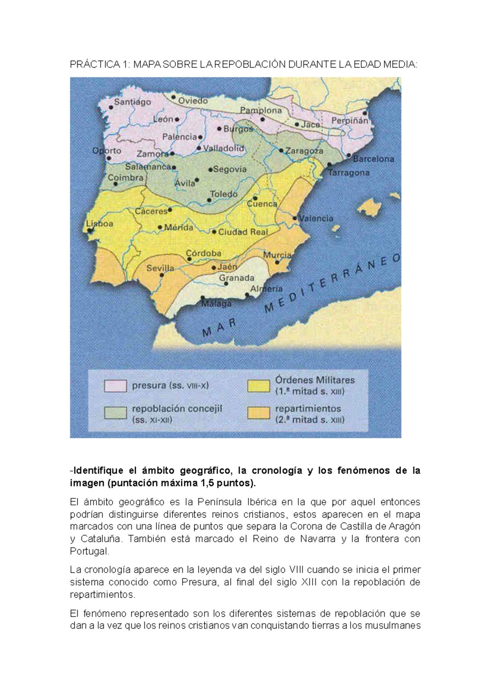

Bloque 2. La Edad Media: tres culturas y un mapa político en constante cambio (711-1474)
1.1 La hegemonía y declive de al-Ándalus
El fin del reino visigodo, debilitado por sus luchas internas, se produjo en el año 711, cuando los musulmanes cruzaron el estrecho de Gibraltar y derrocaron al último rey, Rodrigo, en la batalla de Guadalete. La derrota del reino visigodo dio paso a un nuevo actor que duraría casi 800 años en la península: al-Ándalus.
La península ibérica[1] en época medieval, a partir del 711, presentó unas características peculiares debido a la ocupación del territorio por los musulmanes. Estos mantuvieron períodos alternados entre enfrentamiento y paz con los cristianos, pero las influencias culturales fueron mutuas. Al mismo tiempo, alcanzaron gran importancia las comunidades judías, por lo que las tres religiones coexistieron en el medievo.
Los musulmanes que cruzaron el estrecho pertenecían a grupos étnicos[2] diferentes, pero tenían elementos comunes como la lengua (árabe) o la religión (islam)[3]. Esta nueva religión se había formado en Oriente, en la península arábiga por su fundador Mahoma, que se convirtió en profeta, con el libro sagrado del Corán y en apenas un siglo se expandió rápidamente esta fe, autodefinida como la religión definitiva. Su único dios es Alá y los musulmanes tienen cinco pilares: peregrinación a La Meca al menos una vez en la vida, 5 rezos diarios, “zakat” o limosna solidaria (2,5 %), el lema “solo hay un dios, Alá, y Mahoma es su profeta” y ayuno en el mes del Ramadán. 
https://external-preview.redd.it/mtvss-uN0xWHXDn6fhePvx7AvmFtoH32nnfrqmOTUH0.gif


Máxima expansión del islam hacia el 750 [imagen superior].Los territorios controlados por los musulmanes se denominaron al-Ándalus y evolucionó en cuatro fases; de un emirato dependiente de Damasco (711-756) [imagen derecha] al emirato independiente de Córdoba (756-929), momento en que Abderramán III se proclamó con el título de califa[4] (príncipe de los creyentes), alcanzando el cénit[5] andalusí, con el califato de Córdoba (929-1031). 
Sin embargo, tras los califas que sucedieron a Abderramán III, al-Ándalus empezó a debilitarse y quedó fraccionada en los reinos de taifas (1031) [imagen izquierda] y nuevos imperios africanos (almorávides y luego almohades) (1085). Uno de estos, el reino nazarí de Granada, logró sobrevivir hasta el siglo XV (1492). 
El primer imperio africano: los almorávides [imagen inferior]

El segundo imperio africano: los almohades [imagen inferior]

Resumen: cuatro fases de al-Ándalus [imagen inferior]

1.2 La economía, política y cultura de al-Ándalus
La larga ocupación musulmana ha dejado importantes huellas en la península. La herencia árabe se palpa en la lengua[6] y la toponimia[7], así como en las actividades económicas (cultivos de huerta, producción textil, trabajos en cuero, prácticas comerciales, avances científicos en astronomía, medicina, matemáticas, filosofía) y las costumbres. En cuanto al arte, los musulmanes nos han dejado obras como la Alhambra de Granada, la la mezquita de Córdoba (capital y ciudad más importante de al-Ándalus) o la alcazaba de Málaga, y realizaron una crucial aportación en la preservación cultural del mundo griego, latino, persa e hindú.
Socialmente, al-Ándalus fue muy diversa. Destacan cuatro grupos clave: la minoría musulmana que gobierna y atravesó el estrecho, los muladíes[8] (población cristiana hispanovisigoda convertida al islam), los mozárabes[9] (cristianos arabizados[10] que mantuvieron su religión bajo dominio musulmán a cambio de pagar impuestos) y una minoría judía[11] (que, como los mozárabes, debían pagar un impuesto extra). A nivel político, el final del califato estuvo marcado por las fuertes incursiones militares de Almanzor[12], otro importante gobernante que destacó por sus devastadoras expediciones de saqueo en ciudades cristianas (las razias). Tras su muerte y la posterior fragmentación en reinos de taifas (1031), la debilidad andalusí, evidenciada con la caída de la taifa de Toledo en el 1085, obligó a pedir auxilio a otros imperios africanos: los almorávides. Aunque tuvieron un éxito inicial, acabaron sustituyendo a las débiles taifas andalusíes. De la misma forma, su decadencia conllevó la entrada de un segundo imperio africano: los almohades (reprimieron con mayor dureza a las minorías no musulmanas, como a los judíos sefardíes)[13]. Con el paso del tiempo y las derrotas ante los cristianos, solo fue quedando una taifa: el reino nazarí de Granada.
1.3 Los reinos cristianos, de la resistencia al predominio
La forma en que se organizaron los cristianos en su resistencia dio lugar a la aparición de distintos reinos:
- El reino astur, en el norte peninsular (cornisa cantábrica), fue uno de los primeros territorios en rebelarse contra al-Ándalus (como revuelta por negarse a pagar impuestos) en el 722 con la batalla de Covadonga (primera victoria cristiana) con la mitificada figura de Pelayo. Después, se convirtió en el reino asturleonés y posteriormente en el reino de León, que englobaba también a Galicia.
- El reino de Pamplona, evolucionando al reino de Navarra.
- El condado de Aragón, también convertido en el reino de Aragón en el siglo XI.
- La Marca Hispánica, constituida por varios condados de los que el más importante era el de Barcelona. Este absorbió a los demás formando los condados catalanes en el siglo XII, que acabaron creando la Corona de Aragón por unión dinástica con el reino de Aragón[14].
- El condado de Castilla, dependiente del reino astur. Acabó independizándose y formó la Corona de Castilla (absorbiendo al reino de León).
- El condado de Portucal, también llamado condado portucalense. Acabaron independizándose de Castilla como el reino de Portugal en el siglo XII[15].
Todos los territorios occidentales, a excepción de Portugal, acabaron por unirse en lo que se llamó la Corona de Castilla, que además amplió sus dominios con los territorios que iba conquistando de norte a sur a los musulmanes (la importante taifa de Toledo, Jaén, Córdoba, Sevilla, Murcia, etc.), así como la integración de Vizcaya, Guipúzcoa y Álava. La Corona de Aragón, al este peninsular, se amplió territorialmente con la conquista de los reinos de Valencia y el archipiélago balear.

El avance cristiano hacia el sur se justificó ideológicamente mediante el concepto de Reconquista (Alfonso III de Asturias creó la idea de recuperar y autoproclamarse sucesores del antiguo reino visigodo, que fue cristiano). Este avance militar tuvo un punto de inflexión, decisivo, en la batalla de las Navas de Tolosa (1212): trascendental victoria cristiana contra los almohades que supuso el principio del fin de al-Ándalus. Progresivamente, entre las taifas musulmanas, debilitadas por los almorávides, almohades, guerras civiles y derrotas cristianas, destacó el reino nazarí de Granada, que fue la última taifa en sobrevivir.
A nivel político e institucional, las dos grandes coronas cristianas desarrollaron modelos diferentes:
- En la Corona de Castilla se consolidó un modelo autoritario, donde el rey concentraba un amplio poder y las Cortes tenían un papel principalmente consultivo.
- En la Corona de Aragón se estableció un modelo pactista, donde el poder del monarca estaba más limitado: el rey debía respetar estrictamente los fueros y pactar las decisiones y los impuestos con las Cortes de cada uno de sus territorios (Aragón, Cataluña[16] y Valencia).
Finalmente, durante los siglos XIV y XV, los reinos cristianos sufrieron una profunda crisis bajomedieval. A nivel demográfico y económico, la peste negra (1348) diezmó a la población, reduciéndose casi a la mitad (mayor enfermedad mortal de la historia, llegó a matar reyes como Alfonso XI de Castilla). Socialmente, la miseria y el descontento derivaron en revueltas campesinas, aumento de la presión fiscal (más impuestos) y una creciente violencia contra las minorías, destacando los cruentos pogromos contra los judíos sefardíes en 1391 (finalmente, todos los judíos acabaron siendo expulsados de la península ibérica, en 1492 por los Reyes Católicos, viéndose obligados a emigrar).
Políticamente, esta crisis derivó en graves guerras civiles en ambas coronas. En Castilla, esto provocó un cambio de dinastía[17] con la llegada de los Trastámara y, a finales del siglo XV, la guerra de sucesión castellana (1475-1479) en la que Isabel se impuso a su sobrina Juana la Beltraneja. En Aragón, la crisis sucesoria se resolvió con el Compromiso de Caspe (1412), que entronizó también a la dinastía Trastámara.
1.4 La economía, política y cultura de los reinos cristianos
A medida que conquistaban territorio, los cristianos llevaban a cabo un proceso de “repoblación” u ocupación, aplicando distintos modelos según la época: la presura (valles del Duero, Miño y piedemonte pirenaico) con pequeñas extensiones (minifundios), la repoblación concejil (valles del Tajo y Ebro) con privilegios[18] en fueros o cartas puebla, la de las órdenes militares (La Mancha y Extremadura) que conseguían grandes tierras y se dedicaban a la ganadería extensiva ovina[19] (latifundios); y los repartimientos (valle del Guadalquivir) entre altos nobles, Iglesia y órdenes militares (latifundios aún mayores).

La población musulmana que era obligada a convertirse al cristianismo eran los moriscos, especialmente a partir de 1502; pero si mantenían su religión islámica, a cambio del pago de más impuestos, eran mudéjares[20].
Mantiene su religión | Se convierte a otra religión | |
Antes era cristiano | mozárabe | muladí |
Antes era musulmán | mudéjar | morisco (1502) |
A nivel socioeconómico e institucional, en Castilla destacó la enorme influencia de la ganadería ovina trashumante[21], que acumuló tanto poder que Alfonso X de Castilla[22] formó en el siglo XIII (1273) el Honrado Concejo de la Mesta, una poderosa organización de pastores y ganaderos trashumantes en la corona de Castilla. Políticamente, en esta época nacieron las Cortes, asambleas donde el rey se reunía con representantes de la nobleza, el clero y las ciudades (destacando las Cortes de León de 1188, una de las más antiguas de Europa).
En este desplazamiento hacia el sur, los cristianos conocieron nuevos cultivos introducidos por los musulmanes, pero su actividad fundamental era la ganadería trashumante debido a la naturaleza de la guerra (arrasa con la agricultura y solo se pueden salvar los rebaños gracias a que estos podían moverse y protegerse). En comparación con el mundo islámico, la artesanía cristiana fue generalmente más rudimentaria, destacando la producción textil catalana y las ferrerías[23] vascas. El comercio se vio favorecido a partir del siglo XI por la mejora de los caminos, transporte marítimo y el nacimiento de la banca (por primera vez existía la posibilidad de pedir préstamos cuando un rey estaba falto de liquidez). Además, el hecho de que las tierras hispanas constituyan una península con amplias fachadas marítimas explica la importancia del comercio por mar, donde Aragón se extendió por el Mediterráneo y la Corona de Castilla, aunque especialmente en el siglo XV, por el Atlántico y la costa africana (esto explica la incorporación de territorios africanos como Ceuta, Melilla o el archipiélago canario).

En cuanto a la forma de gobierno, los reinos cristianos normalizaron instituciones como las Cortes, que tenían su origen en las antiguas Curias Regias formadas por nobles y eclesiásticos que asesoraban a los reyes. Cuando los representantes de las ciudades empezaron a formar parte de las Curias se transformaron en Cortes (antecedentes de los actuales Parlamentos). También en la Edad Media se crearon los concejos, que se podrían considerar la base de nuestros ayuntamientos.
En el panorama cultural, la Edad Media supuso una revolución cultural por el surgimiento de las universidades (la Universidad de Salamanca es la primera de la península y una de las cinco más antiguas de toda Europa, fundada en 1218 por Alfonso IX de León) y de la Escuela de Traductores de Toledo de Alfonso X (ejemplo de las redes culturales entre musulmanes, idioma árabe; cristianos, latín y español; y judíos sefardíes, hebreo) y estableció el castellano como la lengua principal de traducción en lugar del latín. Bajo el legado de Alfonso X se creó las Siete Partidas (monumental código legislativo, redactado en Castilla e inspirado en el derecho romano, recuperado gracias a las universidades), unificando el caos normativo castellano: una única ley común para todo el reino (salvando las distancias, parecido al “Liber Iudiciorum” de Recesvinto, rey visigodo).
Económicamente, el Camino de Santiago constituyó un factor fundamental en la relación de Castilla con Europa: ruta estratégica por la que llegaban peregrinos, productos, corrientes artísticas, literarias, ideas, etc.
En el ámbito artístico, la península posee un complejo mosaico, especialmente en el aspecto religioso formado por iglesias y monasterios bien de estilo románico, gótico y mudéjar.
10-12 líneas cada una. Total aproximado entre las dos, 20-24 líneas.
Ejemplos de preguntas cortas del bloque 2
La Edad Media: tres culturas y un mapa político en constante cambio (711-1474)
1. ¿En qué año se produjo la invasión musulmana de la península ibérica y en qué batalla fue derrotado el último rey visigodo? Explique brevemente las causas de la rápida ocupación y el nacimiento de al-Ándalus.
(Debe incluir: 711; batalla de Guadalete; Rodrigo; debilidad visigoda por luchas internas; concepto de al-Ándalus).
2. ¿Qué monarca proclamó el califato de Córdoba en el año 929? Describa brevemente la evolución política de al-Ándalus desde su creación hasta el siglo XI.
(Debe incluir: Abderramán III; emirato dependiente de Damasco; emirato independiente de Córdoba; califato; cénit andalusí; fragmentación en reinos de taifas en 1031).
3. ¿Qué nombre recibían los cristianos que mantuvieron su religión en territorio musulmán a cambio de pagar impuestos? Explique brevemente la organización social de al-Ándalus.
(Debe incluir: mozárabes; muladíes como hispanorromanos/visigodos conversos al islam; coexistencia de tres religiones).
4. ¿Qué caudillo militar musulmán destacó a finales del siglo X por sus devastadoras campañas de saqueo contra los reinos cristianos? Explique el final del califato y la llegada de los imperios norteafricanos.
(Debe incluir: Almanzor; razias; debilidad andalusí; reinos de taifas; auxilio a almorávides y almohades).
5. ¿Qué reino musulmán logró sobrevivir en la península ibérica hasta 1492? Describa brevemente el legado cultural, científico y económico de al-Ándalus.
(Debe incluir: reino nazarí de Granada; huerta y producción textil; matemáticas, filosofía, astronomía; preservación del saber clásico; toponimia; Alhambra y Mezquita).
6. ¿Qué victoria cristiana en el año 1212 supuso el principio del fin de la presencia musulmana en la Península? Explique el concepto de Reconquista y mencione el origen de los primeros núcleos de resistencia cristiana.
(Debe incluir: Navas de Tolosa; justificación ideológica de recuperar la Hispania visigoda; reino asturleonés, Navarra, Aragón, condados catalanes).
7. ¿Qué nombre recibe el proceso de ocupación y colonización de las tierras conquistadas a los musulmanes por los reinos cristianos? Describa los principales modelos aplicados en este proceso según la zona.
(Debe incluir: repoblación; presura en el norte; concejil en Duero/Ebro; órdenes militares en Mancha/Extremadura; repartimientos en el Guadalquivir).
8. ¿Qué institución fundó Alfonso X en 1273 para organizar a los pastores y ganaderos de Castilla? Explique la importancia de la ganadería y el comercio en los reinos cristianos.
(Debe incluir: Honrado Concejo de la Mesta; trashumancia; supervivencia económica por la guerra; banca; expansión atlántica castellana y mediterránea aragonesa).
9. ¿Qué asambleas políticas nacidas en la Edad Media reunían al rey con representantes de la nobleza, el clero y las ciudades? Explique el desarrollo de las principales instituciones de gobierno cristianas.
(Debe incluir: Cortes; antecedente en las Curias Regias; Cortes de León de 1188; creación de concejos o ayuntamientos).
10. ¿Qué rey fundó la Escuela de Traductores de Toledo y promulgó el código legislativo de las Siete Partidas? Explique brevemente las principales vías de desarrollo cultural en los reinos cristianos durante la Edad Media.
(Debe incluir: Alfonso X; Escuela de Traductores de Toledo -intercambio entre árabe, hebreo, latín y castellano-; Siete Partidas -derecho romano unificado-; universidades como Salamanca; Camino de Santiago; arte románico, gótico y mudéjar).
11. ¿Qué personaje histórico adoptó el título de califa en Córdoba durante el siglo X? Describa el legado cultural y económico de al-Ándalus. (PAU 2018)
(Debe incluir: Abderramán III en el año 929 (príncipe de los creyentes). Para la economía: cultivos de huerta, textil, cuero y comercio. Para la ciencia y cultura: idioma, toponimia, astronomía, medicina, matemáticas, filosofía, y la labor de preservación del saber griego, latino, persa e hindú. Para el arte: Mezquita de Córdoba, Alhambra de Granada o Alcazaba de Málaga).
12. ¿Qué nombre reciben los componentes de la minoría cristiana de al-Andalus? Explique las causas de la invasión musulmana y su rápida expansión en la península. (PAU 2020)
(Debe incluir / Pistas: Para la minoría cristiana: mozárabes (cristianos en territorio musulmán). Para las causas y expansión: crisis y debilidad del reino visigodo por luchas internas, año 711, batalla de Guadalete y derrota del rey Rodrigo).
Notas y referencias
[1] Error común: en la Edad Media NO EXISTÍA ESPAÑA (surge mucho más adelante, con los Borbones), hay que hablar en estos primeros bloques de península ibérica todo lo posible.
[2] Es decir, de origen geográfico y cultural diferente. Los musulmanes que atravesaron el estrecho fueron una mezcla de berebres (tribu del norte de África) con árabes (musulmanes provenientes de la península arábiga; es erróneo pensar que fueron un único grupo.
[3] La religión del islam = la religión islámica = la religión musulmana.
[4] Este título es, salvando las distancias, como un papa: poder político + poder religioso. Abderramán III, que era emir (solo poder político) de al-Ándalus, compitió diplomáticamente con los fatimíes de Egipto, que proclamaron su califato en 909. Dos décadas después, Abderramán III proclamó el califato de al-Ándalus en 929 para intentar superarlos en prestigio.
[5] Culmen, esplendor, máximo poder, riqueza cultural.
[6] La influencia del árabe en el castellano es inmensa, siendo la segunda lengua que más léxico ha aportado tras el latín (se calculan unos 4 000 arabismos). Destacan términos de la agricultura, construcción, administración y vida doméstica, muchos con el artículo árabe incorporado (almohada, aceite, alcalde, albañil, aduana).
[7] En la toponimia (nombres de lugares), la huella es imborrable: el prefijo Guadal- deriva de “wadi” (río o valle), como Guadalquivir ("el río grande") o Guadalajara; Medina significa ciudad (Medina Sidonia, Medina Azahara…); Beni- alude a linaje o familia ("hijos de", como Benalmádena); y el artículo al- encabeza multitud de regiones y municipios (Algeciras, Benalmádena, Almería, Albacete, Benidorm, el Algarve o la propia Andalucía)
[8] Un muladí = cristiano convertido al islam
[9] Un mozárabe = cristiano que puede serlo a cambio de pagar un extra de impuestos (recordemos que eran sociedades que no practicaban la libertad religiosa, esas ideas son del siglo XIX, XX y XXI)
[10] Estar arabizado significaba que adoptaron el idioma y alfabeto árabe, la vestimenta, gastronomía y costumbres de la cultura árabe. De hecho, a simple vista era indistinguible un mozárabe de un musulmán en al-Ándalus
[11] La minoría judía en al-Ándalus, también conocidos como judíos sefardíes, tuvo un importante desarrollo sociocultural: la Edad de Oro del judaísmo sefardí, entre los siglos X y XI. Destacaron importantes médicos, filósofos y primeros ministros o “manos derechas” de muchos dirigentes musulmanes, como Abderramán III, que tuvo a Shaprut como médico personal y diplomático.
[12] Almanzor no llegó a ser califa, sino la mano derecha del sucesor de Abderramán III. Con el tiempo, estos poderosos consejeros fueron ganando poder, debilitando al califa y conduciendo a las taifas.
[13] Truco mnemotécnico = almorávide primero, almohade, de almohada (final del día, noche), después.
[14] Una unión dinástica es un matrimonio entre reyes que unen tierras (Aragón y Cataluña; Isabel y Fernando, etc.)
[15] Una unión dinástica es un matrimonio entre reyes que unen tierras (Aragón y Cataluña; Isabel y Fernando, etc.)
[16] Esto es lo que, salvando las distancias, acabaría evolucionando en la peculiaridad catalana que existe en la actualidad, como territorio que demanda mayor autonomía política, económica o incluso la independencia de España.
[17] Una dinastía es una familia gobernante en un reino o corona. Por ejemplo, actualmente en España reina la dinastía borbónica con Felipe VI. En Aragón hubo un cambio de dinastía en el siglo XV a los Trastámara (la misma dinastía que Isabel la Católica)
[18] Como el primer modelo, de presura (campesinos que se mudaban y cultivaban nuevas tierras), estaba teniendo cada vez más problemas por las razias musulmanas (nadie quiere vivir en la frontera de guerra porque son territorios peligrosos), los reinos cristianos crean unos privilegios, con rebajas importantes de impuestos, libertades o incluso perdones a condenas (como el Salvaje Oeste estadounidense) para poder mover población a los nuevos territorios añadidos. Estos privilegios son manifestados con las cartas puebla (fundando nuevas ciudades, como Talavera de la Reina o Plasencia, creadas desde cero) o fueros (de ahí viene el actual fuero vasco y navarro). Por poner ejemplo, Madrid o Cuenca tuvieron fueros.
[19] La lana de oveja se convertiría en el mayor potencial económico de Castilla, destacando la oveja merina (de ahí la expresión popular “No mezcles churras con merinas”, refiriéndose a no hibridar la raza que daba esa lujosa lana de exportación con la raza churra, cuya lana era mucho más basta y de menor valor comercial).
[20] • Mozárabes: cristianos que vivían en territorio musulmán.
• Muladíes: cristianos que se convirtieron al islam en territorio musulmán.
• Mudéjares: musulmanes que vivían en territorio cristiano.
• Moriscos: todos los musulmanes convertidos forzosamente al cristianismo, a partir de 1502.
[21] La trashumancia ovina (ovejas) en Castilla es el desplazamiento estacional de los rebaños de ovejas en busca de pastos frescos, viajando desde las montañas del norte en verano hasta los valles y tierras del sur en invierno.
[22] IMPORTANTÍSIMO. Alfonso X de Castilla, apodado como Alfonso X el Sabio, destaca por el Concejo de Mesta, la creación de la Escuela de Traductores de Toledo y las Siete Partidas.
[23] Taller donde se trabaja con las menas de hierro, reduciéndolas a metal.